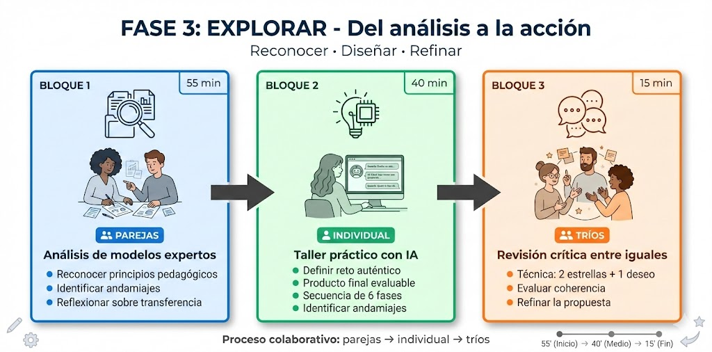
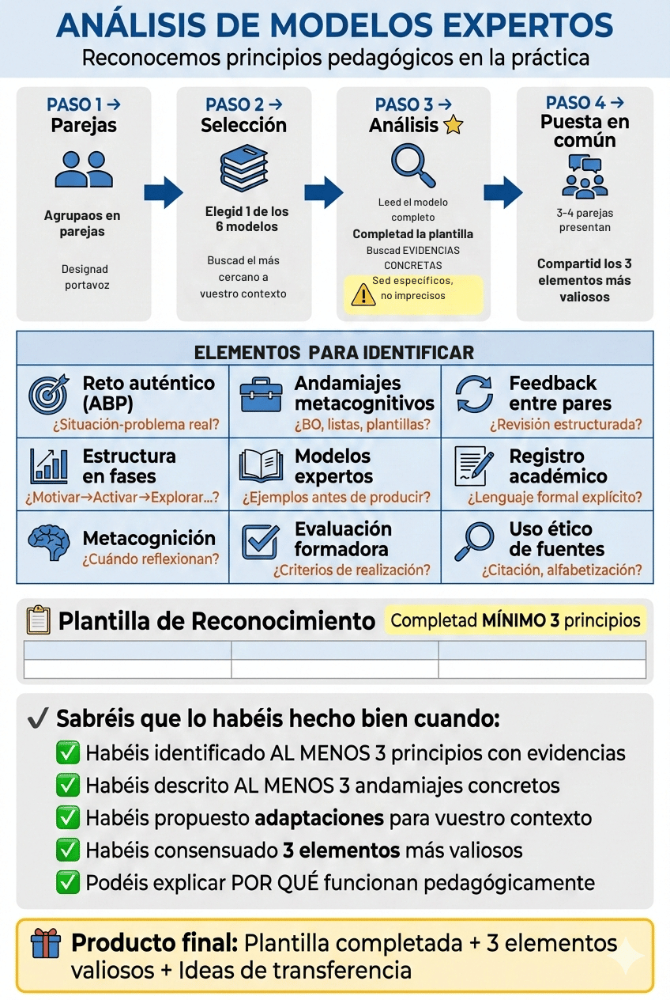
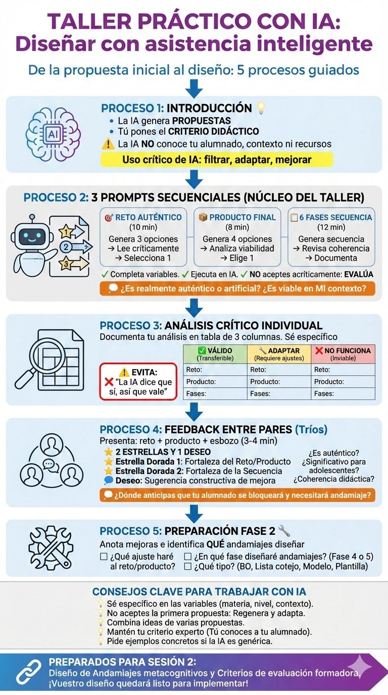

Diseñar experiencias de aprendizaje: del ABP al andamiaje metacognitivo
3. Tarea inicial (Fase 3ª: exploración)
0. Del análisis a la acción: reconocer para diseñar
Objetivos de aprendizaje y criterios de éxito explícitos (Dylan Wiliam)
Base de orientación visual: Infografía que anticipa el proceso completo
Aprendizaje colaborativo (parejas y tríos - Wiliam, estrategia 4)
Trabajo con modelos antes de producir (andamiaje)
Uso ético de IA como asistente supervisado
Evaluación formativa: feedback entre pares estructurado (andamiaje)
En las fases anteriores habéis conectado con vuestra experiencia docente real (Motivar) y activado vuestros conocimientos previos sobre diseño didáctico, evaluación formativa y formadora, andamiaje metacognitivo y uso ético de IA (Activar). La siguiente fase esExplorar: vais a trabajar con lo que ya sabéis, reconociendo esos principios pedagógicos en modelos expertos reales y utilizándolos para esbozar vuestra propia situación de aprendizaje.
En esta fase, identificaréis cómo se materializan en diseños concretos los principios pedagógicos que hemos trabajado: reto auténtico, andamiajes metacognitivos (bases de orientación, listas de cotejo, modelos anotados, plantillas, preguntas guía), evaluación formadora, feedback entre pares y uso ético de IA. Se trata de reconocer, analizar y transferir estos elementos a vuestro propio contexto educativo.
El proceso de esta fase combina tres momentos complementarios con distintas modalidades de trabajo: primero, trabajaréis en parejas para analizar colaborativamente modelos, identificando en ellos los principios pedagógicos estudiados; después, trabajaréis individualmente con IA como asistente de planificación para esbozar vuestro propio diseño; finalmente, os agruparéisen tríos para recibir y ofrecer feedback crítico constructivo sobre las propuestas generadas.
Objetivos de aprendizaje
Al finalizar esta fase, seréis capaces de:
Reconocer en modelos expertos de situaciones de aprendizaje los principios pedagógicos trabajados: ABP (reto auténtico), andamiajes metacognitivos específicos (BO, listas de cotejo, modelos anotados, plantillas, preguntas guía), estructura en fases secuenciadas, evaluación formadora y feedback entre pares.
Analizar críticamente cómo se concretan esos principios en actividades específicas.
Transferir elementos valiosos de los modelos analizados a vuestro propio contexto educativo, adaptándolos a vuestro alumnado y vuestra materia específica.
Utilizar la IA de manera ética y crítica como asistente de planificación didáctica, generando propuestas que después evaluaréis y adaptaréis con vuestro criterio pedagógico experto.
Esbozar el diseño inicial de vuestra propia situación de aprendizaje: reto auténtico, producto final evaluable y secuencia de 6 fases con identificación de andamiajes necesarios.
Proporcionar y recibir feedback constructivo entre pares, utilizando criterios pedagógicos compartidos para valorar la coherencia, viabilidad y pertinencia de los diseños.
Criterios de éxito
Sabréis que habéis alcanzado los objetivos de esta fase cuando:
✓ Hayáis completado la plantilla de reconocimiento de principios pedagógicos con evidencias específicas de al menos 3 principios identificados en un modelo, y hayáis reflexionado sobre su transferibilidad a vuestro contexto.
✓ Hayáis generado con IA y seleccionado críticamente: 1 reto auténtico significativo para vuestro alumnado, 1 producto final evaluable y relevante, y un esbozo de secuencia didáctica de 6 fases.
✓ Hayáis anotado críticamente qué elementos de las propuestas de IA son válidos (✅), cuáles necesitan adaptación (⚠️), cuáles no funcionan (❌) y qué andamiajes debéis diseñar (💡).
✓ Hayáis recibido feedback estructurado (andamiaje) de al menos 2 compañeros/as usando la técnica “2 estrellas y 1 deseo”, y podáis explicar cómo ese feedback mejorará vuestro diseño.
✓ Tengáis un documento inicial guardado con el esbozo de vuestra situación de aprendizaje, listo para desarrollar los andamiajes y criterios de evaluación para la Sesión 2ª.
La siguiente infografía (base de orientación) os muestra el recorrido completo de esta fase exploratoria, desde el análisis en parejas hasta el refinamiento colaborativo en tríos:

Infografía de elaboración propia realizada con Gemini (2026). Base de orientación de la fase 3(CC BY-NC-SA)
Nota metodológica: Esta base de orientación (BO) es en sí misma un ejemplo de andamiaje metacognitivo. Permite anticipar el proceso completo, reducir la incertidumbre y facilitar la autorregulación.
Esta fase de exploración se desarrolla mediante dos actividades secuenciadas:
Actividad 1ª: Análisis de modelos - reconocimiento de principios pedagógicos (45 min) Trabajo en parejas para identificar cómo se materializan en diseños reales los principios pedagógicos estudiados.
Actividad 2ª: Taller práctico con IA - primeras fases del borrador de situación de aprendizaje (55 min) Trabajo individual con asistencia de IA para esbozar el diseño propio (reto, producto, 6 fases), seguido de revisión crítica en tríos.
Ambas actividades incluyen sus propias listas de cotejo para autorregulación metacognitiva. Al finalizar la fase, dispondréis de un cierre integrador (metacognición) que establecerá el puente hacia la Sesión 2ª.
💡 Recordad. En la exploración, el error es parte del aprendizaje. Probad, cuestionad, dialogad con vuestros compañeros y con la IA. El objetivo no es “hacerlo perfecto”, sino comprender profundamente cómo funcionan los principios pedagógicos en la práctica para poder aplicarlos conscientemente en vuestras aulas.
1. Análisis de modelos
📌 ELEMENTOS PEDAGÓGICOS EN ESTA ACTIVIDAD:
Objetivos y criterios de éxito explícitos (Dylan Wiliam, estrategia 1)
Aprendizaje colaborativo en parejas (Wiliam, estrategia 4: “Activar a los estudiantes como recursos de aprendizaje mutuo”)
Andamiaje: plantilla estructurada de reconocimiento de principios pedagógicos
Andamiaje: infografía como base de orientación (anticipar, planificar y reducir carga cognitiva)
Trabajo con modelos: deconstrucción analítica antes de producir
Evaluación formadora: autoevaluación con lista de cotejo al finalizar

Infografía de elaboración propia generada con Gemini (2026). Análisis de modelos(CC BY-NC-SA)
Antes de diseñar vuestra propia situación de aprendizaje, es fundamentalobservar cómo funcionan los principios pedagógicos en un diseño o práctica real. En esta actividad, analizaréis colaborativamente un modelo de una actividad, identificando en él los principios que hemos trabajado en las fases anteriores: andamiajes metacognitivos concretos, estructura en fases secuenciadas, evaluación formadora, feedback entre pares, etc. Se trata de comprender profundamente cómo esos principios se materializan en actividades, herramientas y secuencias concretas. Este análisis os proporcionará un repertorio de estrategias transferibles a vuestro propio contexto educativo, con vuestro alumnado específico y vuestra materia.
Objetivos de la actividad
Al finalizar esta actividad, seréis capaces de:
Identificar en un modelo experto real al menos 3 principios pedagógicos estudiados (ABP, andamiajes metacognitivos, fases secuenciadas, evaluación formadora, feedback entre pares, etc.).
Proporcionar evidencias específicas (ejemplos concretos) de cómo se concreta cada principio en actividades y herramientas del modelo.
Analizar críticamente qué andamiajes metacognitivos específicos (BO, listas de cotejo, modelos anotados, plantillas) se proporcionan en el modelo y en qué fases de la secuencia didáctica.
Reflexionar colaborativamente sobre cómo transferir esos elementos a vuestro propio contexto educativo, adaptándolos a vuestra materia y alumnado.
Sintetizar los 3 elementos más valiosos del modelo analizado para incorporar en vuestro propio diseño.
Criterios de éxito
Sabréis que habéis completado satisfactoriamente esta actividad cuando:
✓ Hayáis completado colaborativamente la plantilla de reconocimiento de principios pedagógicos con evidencias específicas para al menos 3 principios.
✓ Hayáis citado textualmente o descrito al menos 3 principios pedagógicos concretos del modelo (BO, listas de cotejo, plantillas, modelos anotados).
✓ En la columna “Cómo transferirlo a mi materia/contexto”, hayáis propuesto adaptaciones realistas y específicaspara vuestro alumnado.
✓ Hayáis identificado y consensuado los 3 elementos más valiosos del modelo para incorporar en vuestros diseños propios.
✓ Podáis explicar con claridad por qué esos elementos funcionan desde el punto de vista pedagógico (conectando con los principios estudiados en Fase 1 y Fase 2).
La actividad se articula en 4 fases o procesos y se cierra con una lista de cotejo:
Objetivo del trabajo en pareja: combinar miradas y experiencias diferentes para enriquecer el análisis.
Designad un portavoz (opcional) si vais a compartir vuestro análisis en la puesta en común.
💡 Nota metodológica: El trabajo en parejas favorece el diálogo pedagógico y la co-construcción de conocimiento. Evitad simplemente “dividir el trabajo” (tú analizas estos principios, yo analizo estos otros). El valor está en el análisis conjunto y dialogado.
Paso 2.º: Selección libre de modelo (5 min)
Cada pareja elige libremente uno de los siguientes modelos disponibles. Todas son actividades de situaciones de aprendizaje completas diseñadas para Bachillerato de adultos en el ámbito de Lengua Castellana y Literatura, pero los principios pedagógicos son transferibles a cualquier materia.
Redacción y oratoria de introducciones académicas para debate
6 fases completas claramente estructuradas
Plantilla de redacción con 7 secciones (exordio, tesis, argumentos, cierre...)
Análisis de modelo oral en vídeo cuestionario interactivo
Técnicas de oralidad trabajadas explícitamente
Ensayo y feedback en parejas estructurado
Autoevaluación con escala numérica 1-5
💡 Recomendación: Elegid el modelo que más se acerque a vuestro contexto o al tipo de tarea compleja que queréis diseñar. Si enseñáis una materia muy diferente a Lengua (Matemáticas, Ciencias, Tecnología...), no os preocupéis: los principios pedagógicos son transferibles. Buscad la lógica subyacente, no la temática superficial.
Paso 3.º: Lectura atenta y análisis del modelo (30 min)
Cada pareja lee el modelo seleccionado y completa la plantilla de reconocimiento de principios pedagógicos (desplegable más abajo). Este es el núcleo de la actividad. Trabajad de manera dialogada:
Leed juntos el modelo completo (o repartid secciones y después compartid hallazgos).
Subrayad o anotad elementos que ejemplifiquen cada principio pedagógico de la plantilla.
Buscad evidencias concretas: citas textuales, descripciones de actividades, ejemplos de andamiajes (copiad literalmente títulos de listas de cotejo, apartados de plantillas, etc.).
Reflexionad juntos sobre cómo transferir esos elementos a vuestras materias y contextos específicos. Sed concretos: “En mi clase de Historia, esto se traduciría en...”
Consensuad qué escribís en cada casilla. El diálogo pedagógico es lo más valioso de este proceso.
⚠️ Evitad rellenar la plantilla de manera mecánica o superficial (“Sí, tiene andamiajes”). Sed específicos: ¿QUÉ andamiajes concretos? ¿DÓNDE aparecen? ¿CÓMO funcionan? La calidad del análisis determinará la utilidad posterior para vuestro diseño.
Plantilla de reconocimiento de principios pedagógicos
PLANTILLA DE RECONOCIMIENTO DE PRINCIPIOS PEDAGÓGICOS
Nombres de la pareja: ________________________________________
Modelo analizado: ☐ Incorpora otras voces ☐ Del análisis literario al ensayo ☐ Modelo expositivo ☐ Micro-exposiciones orales ☐ Ensayo de introducción para debate
Fecha: _______________
Instrucciones: Leed el modelo completo y completad esta plantilla identificando cómo se concretan los principios pedagógicos estudiados. Proporcionad evidencias específicas (citas, ejemplos, nombres de herramientas) y reflexionad sobre su transferibilidad a vuestro contexto.
Principio pedagógico
¿Cómo se concreta en este modelo? (Evidencias específicas: citas, ejemplos, herramientas)
¿Cómo podría transferirlo a mi materia/contexto? (Adaptaciones realistas para mi alumnado )
1. Estructura en fases secuenciadas
¿Se identifica una progresión clara y explícita? ¿Qué fases aparecen?
Listadlas: “Fase 1: X (sesiones), Fase 2: Y (sesiones)…”
2. Andamiajes metacognitivos
¿Qué herramientas específicas proporciona para guiar al alumnado?
☐ Bases de orientación (BO) ☐ Listas de cotejo ☐ Modelos anotados ☐ Plantillas de planificación ☐ Otros:
Sed MUY específicos: “Lista de cotejo de 21 ítems titulada 'X' que aparece en la Fase Y. Incluye criterios como...”.
¿Qué andamiaje concreto necesitaría mi alumnado en mi tarea?
3. Trabajo con modelos expertos
¿Se proporcionan modelos para analizar ANTES de que el alumnado produzca? ¿Cómo se deconstruyen esos modelos?
Ejemplo: “Modelo de párrafo con 4 capas marcadas en colores (Fase 2). El alumnado analiza…”.
4. Metacognición explícita
¿En qué momentos se pide al alumnado reflexionar conscientemente sobre su propio proceso de aprendizaje? (autoevaluación, reflexión escrita, rutinas de pensamiento...)
Ejemplo: “Rutina Veo-Pienso-Pregunto en Fase 1 donde el alumnado reflexiona sobre…”.
5. Evaluación formadora
¿Se explicitan criterios de realización (pasos a seguir, SÍ/NO)? ¿Se diferencian de criterios de calidad (niveles de logro: inicial, adecuado, avanzado)?
Ejemplo: “La lista de cotejo establece criterios de realización (Paso 1: ✓, Paso 2: ✓…). No se observan rúbricas de niveles”.
Ejemplo: “Fase 3: Informe de revisión entre pares con ficha estructurada que incluye…”.
7. Registro y lenguaje académico
¿Cómo se trabaja explícitamente el registro lingüístico apropiado para tareas complejas académicas? (metalenguaje, formalidad, precisión…)
8. Uso ético de fuentes/información
¿Se trabaja la alfabetización informacional, citación académica, uso ético de fuentes secundarias, prevención del plagio?
Ejemplo: “Normas APA trabajadas con infografía BO en Fase 2. Plantilla de citación incluida...”
REFLEXIÓN FINAL DE LA PAREJA:
Los 3 elementos más valiosos de este modelo para transferir a nuestras situaciones de aprendizaje:
1.
2.
3.
💾 Guardad esta plantilla completada. La necesitaréis para la puesta en común (Paso 4º) y será un recurso valioso para diseñar vuestra propia situación de aprendizaje.
Paso 4.º: Puesta en común plenaria (15 min)
Compartiremos brevemente los hallazgos del análisis para enriquecer la comprensión colectiva de cómo funcionan los principios pedagógicos en la práctica:
3-4 parejas voluntarias comparten brevemente (2-3 min cada una):
Qué modelo analizaron y por qué lo eligieron.
Los 3 elementos más valiosos identificados (de la reflexión final de la plantilla).
Una reflexión sobre su transferibilidad a sus contextos específicos: “Esto me serviría para mi clase de X porque…”.
Opcionalmente: 1 andamiaje metacognitivo concreto que les haya parecido especialmente útil.
💡 Valor de la puesta en común: Aunque cada pareja haya analizado solo un modelo, mediante la socialización conoceréis elementos valiosos de los 5 modelos disponibles. Tomad notas de las aportaciones de vuestros compañeros: ampliarán vuestro repertorio didáctico.
Lista de cotejo
📌 ELEMENTO PEDAGÓGICO:
Autoevaluación formadora con lista de cotejo: Herramienta de autorregulación metacognitiva que permite al docente en formación verificar la completitud y calidad de su proceso de análisis (criterios de realización).
Utilizad esta lista para guiar vuestro trabajo en pareja y autoevaluaros. Marcad con una ✔ cada paso completado satisfactoriamente:
Lista de cotejo
CRITERIOS DE REALIZACIÓN
¿Completado? (Marca ✔)
PASO 1.º: FORMACIÓN DE PAREJAS
1. Nos hemos agrupado en pareja para trabajar colaborativamente.
2. Hemos acordado trabajar de manera dialogada, no dividiendo mecánicamente el trabajo.
PASO 2.º: SELECCIÓN DE MODELO
3. Hemos elegido libremente uno de los 5 modelos disponibles.
4. Hemos accedido al modelo completo y comprendemos su estructura general.
PASO 3.º: LECTURA Y ANÁLISIS CON PLANTILLA
5. Hemos leído el modelo completo con atención (no solo ojear superficialmente).
6. Hemos completado la plantilla de reconocimiento de principios pedagógicos.
7. Hemos identificado y descrito con evidencias específicas al menos 4 de los principios pedagógicos.
8. En la columna de evidencias, hemos proporcionado citas textuales, nombres de herramientas o descripciones precisas (no generalidades tipo “sí, tiene andamiajes”).
9. Hemos identificado específicamente al menos 3 andamiajes metacognitivos concretos del modelo (BO, listas de cotejo, plantillas, modelos anotados).
10. En la columna de transferencia, hemos propuesto adaptaciones realistas y específicas para nuestras materias/contextos (no solo “esto me serviría”).
11. Hemos consensuado y escrito los 3 elementos más valiosos del modelo en la reflexión final.
12. Hemos dialogado pedagógicamente durante el análisis, compartiendo interpretaciones y cuestionando mutuamente.
PASO 4.º: PUESTA EN COMÚN
13. Hemos participado activamente en la puesta en común (presentando o escuchando activamente).
14. Hemos tomado notas de las aportaciones de otras parejas para ampliar nuestro repertorio.
REFLEXIÓN METACOGNITIVA FINAL
Comprendemos ahora cómo se materializan en diseños concretos los principios pedagógicos estudiados (ABP, andamiaje, evaluación formadora, etc.).
Podemos explicar con claridad por qué los elementos identificados funcionan pedagógicamente.
Tenemos ideas concretas de qué andamiajes metacognitivos podrían necesitar nuestro alumnado en nuestras tareas complejas.
✅ Autoevaluación. Si habéis marcado la mayoría de los criterios (especialmente los del Paso 3.º, que son el núcleo), habéis completado satisfactoriamente esta actividad. Estáis preparados para diseñar con IA que es la actividad 2ª de esta fase 3.
2. Taller con IA: generamos el diseño inicial de la situación de aprendizaje
📌 ELEMENTOS PEDAGÓGICOS EN ESTA ACTIVIDAD:
IA como asistente pedagógico (no como sustituto): generación de propuestas que requieren criterio didáctico experto.
Objetivos y criterios de éxito explícitos (Dylan Wiliam, estrategia 1).
Secuencia estructurada de prompts progresivos (del reto general al diseño específico de 6 fases).
Andamiaje: plantilla de prompts con variables explícitas para personalizar.
Andamiaje (bases de orientación): infografía que permite anticipar, planificar y reducir carga cognitiva.
Pensamiento crítico: análisis sistemático de propuestas de IA (qué es válido, qué adaptar, qué descartar).
Feedback entre pares estructurado: técnica “2 estrellas y 1 deseo” (Wiliam, estrategia 4).
Evaluación formadora: lista de cotejo con criterios de realización para autorregular el proceso.
En esta actividad usaremos el uso deinteligencia artificial generativa como asistente de planificación didáctica. A través de una secuencia guiada de 3 prompts, generaréis el esqueleto inicial de vuestra situación de aprendizaje: reto auténtico, producto final y borrador de secuencia en 6 fases.
Es fundamental comprender que la IA genera propuestas, pero sois vosotros quienes ponéis el criterio didáctico experto. La IA no conoce vuestro alumnado concreto, vuestro contexto institucional, vuestros recursos disponibles ni vuestras intenciones educativas. Por eso, tras cada generación con IA, trabajaréis la REVISIÓN crítica individual y el feedback colaborativo entre iguales.
Objetivos de la actividad
Al finalizar esta actividad, seréis capaces de:
Utilizar IA generativa (ChatGPT, Claude, Kimi, Qwen, Gemini) de forma funcional para generar propuestas iniciales de diseño didáctico mediante prompts estructurados.
Evaluar críticamente las propuestas de IA identificando qué es transferible a vuestro contexto, qué necesita adaptación y qué resulta inviable o pedagógicamente cuestionable.
Generar y perfeccionarun reto auténtico conectado con la realidad de vuestro alumnado adolescente de ESO/Bachillerato.
Seleccionarun producto final evaluable, significativo y viable para vuestro contexto específico.
Diseñar un borrador de secuencia didáctica estructurada en las 6 fases del modelo REA.
Proporcionar y recibir feedback constructivo entre iguales sobre la viabilidad y coherencia del diseño.
Criterios de éxito
Sabréis que habéis completado satisfactoriamente esta actividad cuando:
✓ Hayáis ejecutado los 3 prompts secuenciales personalizándolos con vuestras variables específicas (materia, nivel, contexto, problema identificado).
✓ Hayáis documentado en un archivo las propuestas de IA y vuestro análisis crítico: qué es válido, qué adaptar, qué descartar.
✓ Tengáis seleccionado 1 reto auténtico y 1 producto final viables y significativos para vuestro alumnado adolescente.
✓ Tengáis un borrador de secuencia en 6 fases con actividades específicas para cada fase.
✓ Hayáis compartido vuestra propuesta con compañeros y recibido feedback constructivo estructurado (“2 estrellas y 1 deseo”).
✓ Hayáis identificado en qué fases (normalmente Explorar, Estructurar y Aplicar) necesitaréis diseñar andamiajes metacognitivos específicos.

Infografía de elaboración propia realizada con Gemini (2026). Base de orientación de 3.2(CC BY-NC-SA)
La actividad se articula en 5 procesos y se cierra con una lista de cotejo:
Proceso 1.º: Introducción al uso de IA en diseño didáctico (5 min)
Mi experiencia práctica. Uso habitualmente Claude y Perplexity como asistentes en diferentes tareas educativas. Para la generación de imágenes, también recurro con frecuencia a Gemini, especialmente para infografías y Reve. Asimismo, para la generación de informes en profundidad sobre alguna cuestión, sobresalen Claude y Kimi. Por último, si lo que me interesa es la fidelidad a las fuentes, uso NotebookLM en la generación de AGENTES con Gemini. Asimismo, para storybook, presentaciones (Gamma), vídeos y pódcast, uso NotebookLM.
Marco de referencia. Utilizaremos el Marco MIAE como referencia ética y pedagógica. Este marco establece diferentes niveles de uso de IA, desde el trabajo completamente humano hasta la asistencia controlada de IA en fases específicas del proceso.
Proceso 2.º: Trabajo individual con IA - Secuencia de 3 prompts guiados (30 min)
Recibiréis una plantilla digital con los 3 prompts que ejecutaréis secuencialmente con la IA de vuestra elección. No obstante estas plantillas, lo cierto es que la denominada ingeniería de prompt ha evolucionado rápidamente, puesto que los modelos cada vez interactúan mejor con instrucciones en lenguaje natural. No obstante, cualquier prompt puede ser depurado o mejorado con el uso de cualquier IA, es decir, podéis pedir que mejore o perfeccione cualquier instrucción que generéis. Así, por ejemplo, ChatGPT dispone de un servicio específico: Platform Openai.
Consejo práctico: Copiad cada prompt completo, sustituir las variables con vuestros datos reales y pegadlo en la IA. No enviéis el prompt con las variables sin completar. Cuanto más específicos seáis, mejores serán las propuestas. Asimismo, podéis solicitar a una IA mejorar la insrucción, bien directamente, o bien a través del servicio específico de Openai.
PROMPT 1: Definir el reto auténtico (10 min)
Soy profesor/a de [MATERIA] en [NIVEL - ESO/Bachillerato].
Quiero diseñar una situación de aprendizaje donde mi alumnado adolescente aprenda [COMPETENCIA/CONTENIDOESPECÍFICO].
El problema recurrente que detecto es [PROBLEMA IDENTIFICADO EN FASE 1 - “El proyecto que no funcionó”].
Contexto del alumnado: Son adolescentes de entre [EDAD] años. [AÑADE 1-2 CARACTERÍSTICAS RELEVANTES: nivel socioeconómico, intereses, dificultades habituales...]
Tarea:
Sugiere 3 posibles retos o preguntas motrices auténticas que:
Conecten con contextos reales relevantes para adolescentes
Sean significativos y funcionales
Requieran movilizar conocimientos complejos
Se puedan abordar en 8-10 sesiones de clase
Para cada reto, explica brevemente:
1. Por qué es relevante para este alumnado
2. Qué competencias moviliza
3. Qué conexión tiene con su vida real o contextos profesionales futuros
Proceso para este prompt:
Paso
Tiempo
Qué hacer
1. Generar
3 min
Completa las variables del prompt con tu información específica y ejecútalo en tu IA favorita.
2. Leer críticamente
4 min
Analiza las 3 propuestas con mirada experta:
¿Es realmente auténtico o suena artificial/escolar?
¿Conecta con la vida real de adolescentes?
¿Es viable en tu contexto (recursos, tiempo, espacios)?
3. Seleccionar o adaptar
3 min
Elige 1 reto o crea uno nuevo combinando elementos de varias propuestas. Puedes modificar la redacción para ajustarlo mejor.
PROMPT 2: Generar el producto final (8 min)
He elegido trabajar con este reto: [COPIAR EL RETO SELECCIONADO O ADAPTADO DEL PROMPT 1]
Ahora necesito definir qué PRODUCTO FINAL tangible y significativo creará mi alumnado adolescente para demostrar que ha resuelto el reto.
Requisitos del producto:
Debe ser evaluable con criterios claros
Debe permitir diferentes niveles de logro (inicial, adecuado, avanzado)
Debe ser relevante para adolescentes (que vean su utilidad)
Debe poder presentarse/compartirse públicamente (al menos en el aula)
Debe ser realista para el tiempo disponible (8-10 sesiones)
Tarea:
Genera 4 opciones variadas de productos finales (pueden ser: escrito, oral, digital, multimodal, práctico, audiovisual...).
Para cada opción, especifica:
1. Descripción concreta del producto
2. Por qué es significativo para adolescentes
3. Qué competencias evalúa
4. Nivel de complejidad técnica (bajo/medio/alto)
5. Viabilidad en el aula (recursos necesarios)
Proceso para este prompt:
Paso
Tiempo
Qué hacer
1. Generar
2 min
Ejecuta el prompt copiando el reto que seleccionaste en PROMPT 1.
2. Analizar viabilidad
3 min
Evalúa cada una de las 4 opciones según tus recursos y contexto:
¿Tienes los recursos técnicos necesarios?
¿El alumnado tiene las competencias digitales previas?
¿Es evaluable de forma justa y clara?
¿Es realmente significativo o solo “vistoso”?
3. Elegir
3 min
Selecciona 1 producto final. Puedes modificarlo o combinarlo con elementos de otras opciones si lo consideras necesario.
PROMPT 3: Esbozar la secuencia de fases (12 min)
Mi alumnado creará este producto final: [PRODUCTO ELEGIDO EN PROMPT 2]
Diseña una secuencia didáctica de6 fases para llegar a ese producto, siguiendo este modelo pedagógico:
1. MOTIVAR (1 sesión):
Presentar el reto, conectar con contextos reales relevantes para adolescentes, explicitar objetivos de aprendizaje.
2. ACTIVAR (1 sesión):
Recuperar conocimientos previos necesarios mediante actividades diagnósticas.
3. EXPLORAR (1-2 sesiones):
Investigar, experimentar, trabajar sobre una situación significativa utilizando lo que ya saben.
4. ESTRUCTURAR (3-4 sesiones):
Presentar nuevos contenidos/procedimientos con andamiajes: modelos expertos, tutoriales, prácticas guiadas, listas de cotejo.
5. APLICAR (2 sesiones):
Construir el producto final de forma secuenciada, con apoyo de criterios explícitos.
6. CONCLUIR (1 sesión):
Presentar productos, evaluar con rúbrica, coevaluar entre pares y reflexionar metacognitivamente sobre el proceso.
Tarea:
Para cada fase, propón:
1-2 actividades concretas y específicas para mi materia ([TU MATERIA]) y nivel ([ESO/Bachillerato])
Objetivos de aprendizaje de la fase
Tipo de agrupamiento (individual/parejas/equipos/gran grupo)
Recursos necesarios
Productos intermedios (si los hay)
Criterios importantes:
Las actividades deben ser realistas y viables en un aula estándar
Deben adaptarse a la madurez cognitiva de adolescentes
Deben incluir momentos de metacognición explícita
La fase 4 (Estructurar) debe incluir al menos UN tipo de andamiaje: base de orientación, lista de cotejo, modelo anotado o plantilla de planificación
Proceso para este prompt:
Paso
Tiempo
Qué hacer
1. Generar
3 min
Ejecuta el prompt con el producto final elegido en PROMPT 2.
2. Revisar críticamente
5 min
Lee la propuesta completa evaluando coherencia pedagógica:
¿La secuencia tiene lógica didáctica?
¿Las actividades son realistas o demasiado ambiciosas?
¿Se identifican claramente los andamiajes en Fase 4?
¿Hay momentos de reflexión metacognitiva?
¿Falta algo esencial para tu alumnado?
3. Documentar análisis
4 min
Guarda la propuesta de IA en un documento (Google Docs/Word/Odt) y añade una tabla de análisis crítico (ver siguiente sección).
Proceso 3.º: Análisis crítico individual de las propuestas de IA (10 min)
Tras ejecutar los 3 prompts, es fundamental que documentéis vuestro análisis crítico. No aceptéis las propuestas de IA de forma acrítica: debéis evaluarlas con vuestro criterio didáctico experto.
Tabla de análisis crítico (completar individualmente)
Instrucciones: Añadid esta tabla al final de vuestro documento con las propuestas de IA. Completadla antes de compartir con vuestros compañeros en el Proceso 4.º
✅ Lo que me parece VÁLIDO (Transferible directamente a mi contexto)
🔧 Lo que NECESITO ADAPTAR (Requiere ajustes a mi alumnado/recursos)
❌ Lo que NO FUNCIONA (Inviable o pedagógicamente cuestionable)
Sobre el RETO:
Sobre el RETO:
Sobre el RETO:
Sobre el PRODUCTO FINAL:
Sobre el PRODUCTO FINAL:
Sobre el PRODUCTO FINAL:
Sobre la SECUENCIA DE 6 FASES:
Sobre la SECUENCIA DE 6 FASES:
Sobre la SECUENCIA DE 6 FASES:
Valor del análisis crítico. Este ejercicio entrena en pensamiento crítico aplicado a IA. No se trata de “usar IA sí o no”, sino de usarla bien: con criterio, filtrando, adaptando y mejorando las propuestas desde vuestro conocimiento experto del alumnado y del contexto educativo. Además, me parece que una plantilla similar puede y debe usarse con el alumnado cuando recurre a la IA para la realización de cualquier tarea o actividad.
Proceso 4.º: Revisión colaborativa entre iguales con feedback estructurado (15 min)
El trabajo entre iguales es una de las estrategias más potentes de evaluación formativa (Dylan Wiliam, estrategia 4: “Activar a los estudiantes como recursos de aprendizaje mutuo”). Compartiréis vuestra propuesta generada con IA en tríos, recibiréis feedback constructivo y reflexionaréis sobre la viabilidad del diseño.
Dinámica: Cada docente comparte su propuesta (3-4 min por persona). Mientras uno presenta, los otros dos escuchan activamente y toman notas para el feedback posterior.
Qué compartir:
Reto seleccionado (leerlo o resumirlo brevemente)
Producto final elegido y por qué lo habéis considerado viable
Esbozo de las 6 fases (no hace falta leer todas las actividades, solo la lógica general)
Vuestra principal duda o preocupación: “¿Dónde anticipo que puede haber problemas?”
Protocolo de feedback: técnica “2 estrellas y 1 deseo” (D. Wiliam)
Tras cada presentación, los dos compañeros del trío proporcionan feedback oral estructurado usando esta técnica:
Elemento
Qué decir
⭐ Estrella 1
Un elemento sólido del reto o producto: “Me parece muy bien que… porque…” (específico, no genérico como “está bien”).
⭐ Estrella 2
Un elemento bien articulado de la secuencia o coherencia didáctica: “Valoro positivamente que en la Fase X hayas previsto… porque…”
💭 Deseo
Un aspecto mejorable (formulado como sugerencia constructiva): “Me pregunto si podrías considerar… para la Fase Y” o “¿Has pensado en cómo vas a andamiar la parte de...?”.
Nota metodológica. El feedback efectivo es específico, orientado a la mejora y no evaluativo (John Hattie, Dylan Wiliam). Evitad juicios de valor (“esto está mal”) y ofreced sugerencias constructivas (“¿has pensado en…?”, “quizá podrías considerar…”).
Preguntas críticas para orientar el feedback (guía opcional):
¿El reto es realmente auténtico o suena artificial/escolar?
¿El producto final es significativo para adolescentes o es solo “para entregar al profesor”?
¿La secuencia de 6 fases tiene coherencia didáctica? ¿Hay saltos lógicos?
¿Qué fase parece más débil y necesita reforzarse?
¿Dónde anticipas que será necesario diseñar andamiajes metacognitivos? (suelen ser las fases 4-Estructurar y 5-Aplicar)
Proceso 5.º: preparación para Sesión 2.ª
Tras recibir feedback de vuestros compañeros, dedicad unos minutos a anotar las mejoras que incorporaréis. No hace falta reescribir todo ahora, pero sí identificar:
¿Qué ajuste haré al reto o al producto final según el feedback recibido?
¿En qué fase concreta necesitaré diseñar andamiajes metacognitivos específicos?
¿Qué tipo de andamiaje necesita mi alumnado? (BO para anticipar, lista de cotejo para autorregular, modelo anotado para comprender antes de producir, plantilla para planificar…)
Puente hacia Sesión 2.ª. Habéis esbozado vuestra situación de aprendizaje con ayuda de IA y feedback entre pares. En la Sesión 2.ª diseñaréis los andamiajes metacognitivos concretos (BO, listas de cotejo, plantillas) y los criterios de evaluación formadora (realización y calidad) que completarán el diseño.
Lista de cotejo
📌 ELEMENTO PEDAGÓGICO:
Autoevaluación formadora con lista de cotejo. Herramienta de autorregulación metacognitiva que os permite verificar la completitud y calidad de vuestro proceso de trabajo con IA (criterios de realización).
Utilizad esta lista para guiar vuestro trabajo y autoevaluaros. Marcad con una ✔ cada criterio completado satisfactoriamente:
Lista de cotejo
CRITERIOS DE REALIZACIÓN
¿Completado? (Marca ✔)
PROCESO 1.º: INTRODUCCIÓN AL USO DE IA
1. Comprendo que la IA genera propuestas, pero el criterio didáctico experto lo pongo yo.
2. Soy consciente de que la IA NO conoce mi alumnado concreto, mi contexto ni mis recursos, por lo que siempre debo revisar críticamente.
PROCESO 2.º: TRABAJO CON IA - SECUENCIA DE 3 PROMPTS
3. He ejecutado el PROMPT 1 completando todas las variables con mi información específica (materia, nivel, contexto, problema).
4. He leído críticamente las 3 propuestas de reto y he seleccionado o adaptado 1 reto auténtico viable.
5. He ejecutado el PROMPT 2 con el reto seleccionado y he elegido 1 producto final evaluable y significativo.
6. He ejecutado el PROMPT 3 y tengo un borrador de secuencia en 6 fases con actividades específicas.
7. He guardado todas las propuestas de IA en un documento digital (Google Docs/Word/Odt).
PROCESO 3.º: ANÁLISIS CRÍTICO INDIVIDUAL
8. He completado la tabla de análisis crítico con 3 columnas: válido / adaptar / no funciona.
9. He sido específico en el análisis, no superficial (he identificado QUÉ es válido, QUÉ hay que adaptar, POR QUÉ algo no funciona).
10. He revisado especialmente si la secuencia de 6 fases tiene coherencia didáctica y si identifica andamiajes en Fase 4 (Estructurar).
PROCESO 4.º: REVISIÓN COLABORATIVA CON FEEDBACK
11. He compartido mi propuesta con mi trío explicando reto, producto y esbozo de fases.
12. He proporcionado feedback a mis compañeros usando la técnica “2 estrellas y 1 deseo” (específico y constructivo).
13. He recibido feedback de al menos 2 compañeros y he tomado notas de sus sugerencias.
14. He identificado, con ayuda del feedback, en qué fases necesitaré diseñar andamiajes metacognitivos.
PROCESO 5.º: PREPARACIÓN
15. He anotado qué ajustes incorporaré al reto/producto/secuencia según el feedback recibido.
16. He identificado qué tipo de andamiaje concreto necesitará mi alumnado (BO, lista de cotejo, modelo anotado, plantilla).
REFLEXIÓN METACOGNITIVA FINAL
Tengo claro cómo usar IA de forma funcional (no acrítica) en un diseño didáctico.
Comprendo que el valor del feedback entre iguales no está en “corregir”, sino en ampliar perspectivas y detectar puntos débiles.
Tengo un borrador viable de situación de aprendizaje (reto + producto + 6 fases) listo para desarrollar en la Sesión 2.ª.
✅ Autoevaluación. Si habéis marcado la mayoría de los criterios (especialmente los de los Procesos 2.º, 3.º y 4.º, que son el núcleo), habéis completado satisfactoriamente esta actividad. Estáis preparados para la Sesión 2, donde diseñaréis andamiajes concretos y criterios de evaluación formadora.